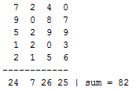
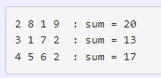

| Задания к практической работе 6 (массивы m = 5, n = 4) | ||
| Назад | ||
|
Задача .1 Найти сумму элементов массива (прямоугольной таблицы) размером [m x n] Задача .2 Найти максимальный элемент массива размером [m x n] Задача .3
Найти сумму всех
элементов массива (переменная  Задача .4 Найти сумму элементов двумерного массива [m x n] по строкам:  Задача .5 Дан целочисленный двумерный массив, размерности n х m, найти сумму всех элементов массива. Задача .6 Дан целочисленный двумерный массив, размерности n х m. Найти сумму и произведение всех элементов массива. Задача .7 Дан целочисленный двумерный массив, размерности n х m. Найти сумму и произведение четных элементов. Задача .8 Дан целочисленный двумерный массив, размерности n х m. Найти сумму и произведение элементов, кратных 3 и 5. размерности n х m. Задача .9 Дан целочисленный двумерный массив, размерности n х m. Найти количество отрицательных элементов, больше -9. Задача .10 Дан целочисленный двумерный массив, Найти номера нечетных элементов, стоящих на четных местах. Задача .11 Дан целочисленный двумерный массив, размерности n х m. Найти максимум и минимум. Поменять их местами. Задача .13 Дан целочисленный двумерный массив, размерности n х m. Заменить все элементы на их квадраты. Задача .12 Дан целочисленный двумерный массив, размерности n х m. Найти среднее арифметическое всех элементов массива. Задача .14 Дан целочисленный двумерный массив, размерности n х m. Выяснить, какое число встречается в какой строке раньше — положительное или отрицательное. Задача .15 Дан целочисленный двумерный массив, размерности n х m. Выяснить, в какой строке последовательность является возрастающей или убывающей. Задача .16 Дан целочисленный двумерный массив, размерности n х m. Вывести его элементы, индексы которых являются степенями двойки (1, 2, 4, 8, 16, ...). Задача .17 Дан целочисленный двумерный массив, размерности n х m. Найти количество элементов кратных 7. Задача .18 Дан целочисленный двумерный массив, размерности n х m. Вывести на экран элементы, которые являются квадратами какого-либо числа. Задача .19 Дан целочисленный двумерный массив, размерности n х m. Найти номера нечетных элементов, стоящих на четных местах. все элементы на их противоположные значения. Задача .20 Дан целочисленный двумерный массив, размерности n х m. Найти максимум и минимум. Поменять их местами. Задача .21 Дан целочисленный двумерный массив, размерности n х m. Заменить все элементы на их квадраты. Задача .22 Дан целочисленный двумерный массив, размерности n х m. Поменять местами первый и последний элементы. Задача .23 Дан целочисленный двумерный массив, размерности n х m. Сформировать новый массив, состоящий из противоположных соответствующих элементов . Задача .24 Дан целочисленный двумерный массив, размерности n х m. Вывести на экран те элементы, у которых остаток от деления на m равен k. Задача .25 Вводятся результаты контрольной работы 10 учащихся. Определите число не удовлетворительных, удовлетворительных, хороших, отличных оценок. Вывести среднюю оценку, полученную учащимися за контрольную работу. Задача .26 Ввести оценки N учеников по K предметам. Определить и вывести на экран количество учеников, не получивших ни одной "5". Задача .27 В группе учится N студентов, студенты получили по четыре отметки за экзамен. Определить количество неуспевающих студентов и средний балл группы. Задача .28 Дан целочисленный двумерный массив, размерности n х m. Сложить соответствующие элементы Задача .29 |
||
| Конспект подготовлен Бакулиным А. М. 2022 год. | ||